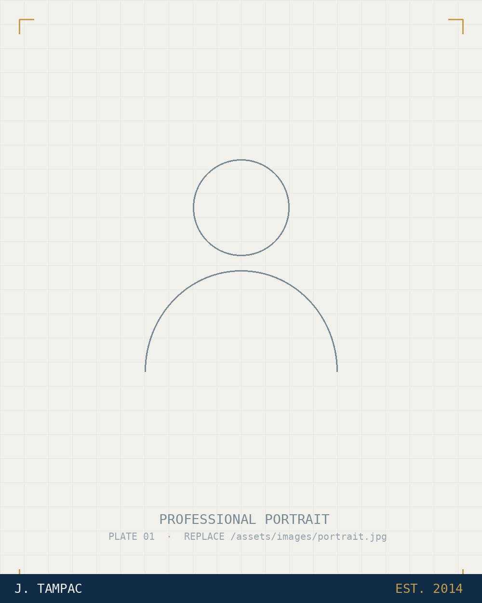

Construction Operations
Inventory control, material management, warehouse optimisation, and site logistics built on ground-floor experience.
Operations Analytics Specialist
ERP Reporting · Business Intelligence · Process Automation
Transforming construction and business operations through data, automation, and practical AI solutions.

PLATE 01For more than ten years across large-scale UAE and GCC projects, I have worked at the meeting point of the warehouse floor and the boardroom — moving from hands-on inventory operations into ERP reporting, analytics, and automation.
Today I design the reporting systems that give management a single, trustworthy view of inventory, procurement, assets, and consumption. Accurate data, disciplined process, and clear visibility — that is the whole job.
Operational fluency and analytical rigour, applied end to end — from the stock ledger to the executive dashboard.
Inventory control, material management, warehouse optimisation, and site logistics built on ground-floor experience.
Advanced Excel, Power Query, SQL Server, Power BI, dashboards, and KPI reporting that hold up to audit.
ePROMIS and JD Edwards reporting across inventory, procurement, assets, and process improvement.
Workflow and reporting automation, executive reporting, and decision-support tools that remove manual effort.
Linked stock ledgers, auditor records, and closing reports into one reconciled, audit-ready view.
Real-time visibility into fuel consumption, issuance, and variance for management.
Consolidated fragmented multi-project datasets into one centralised reporting engine.